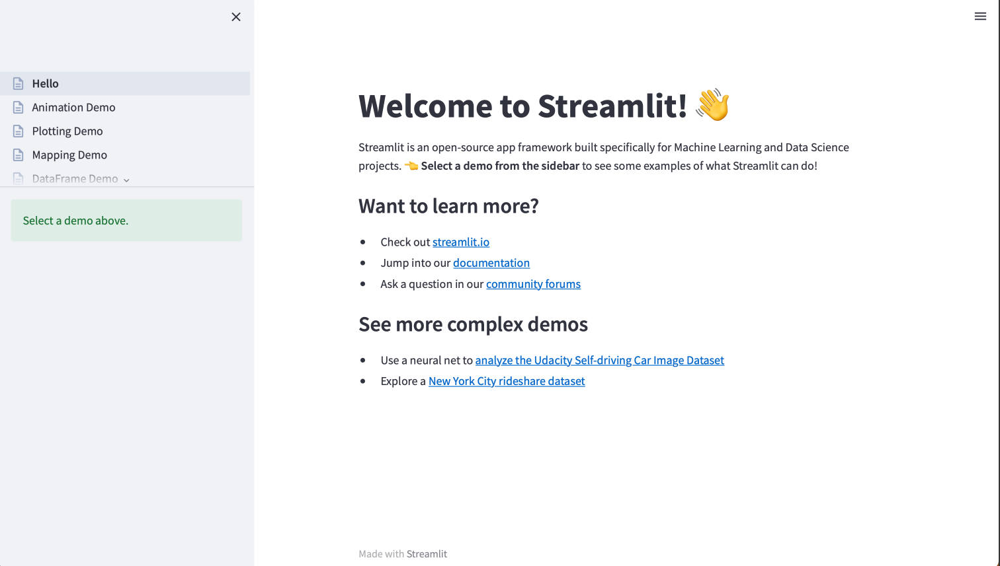
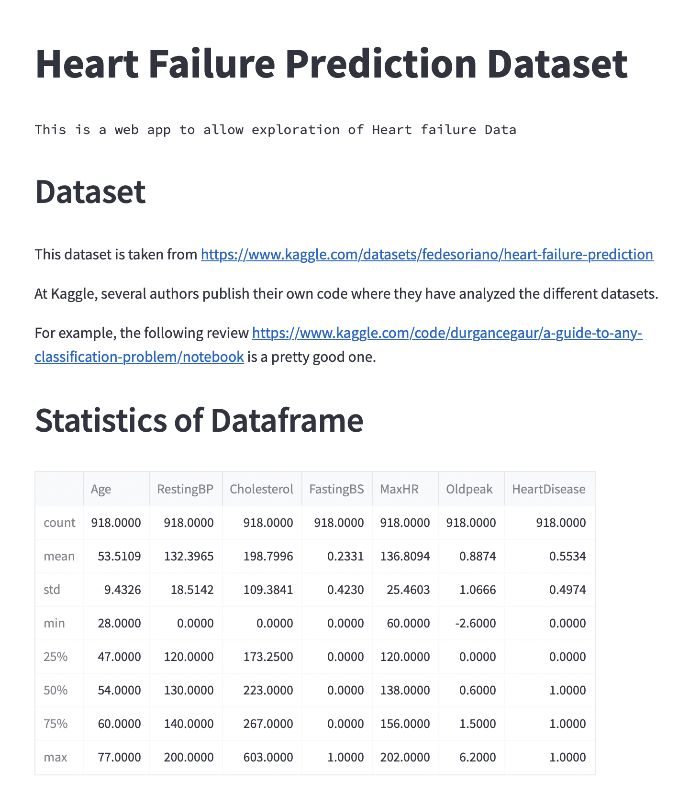
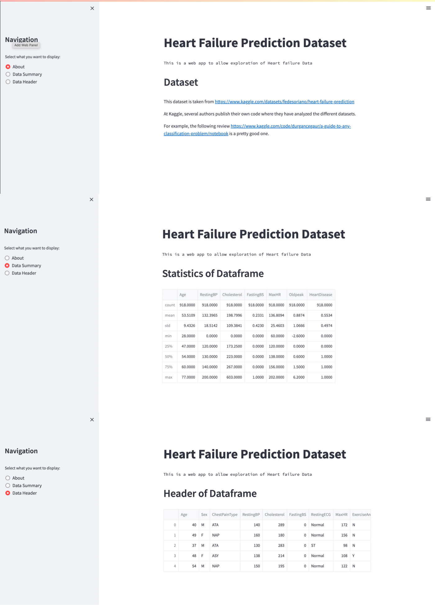
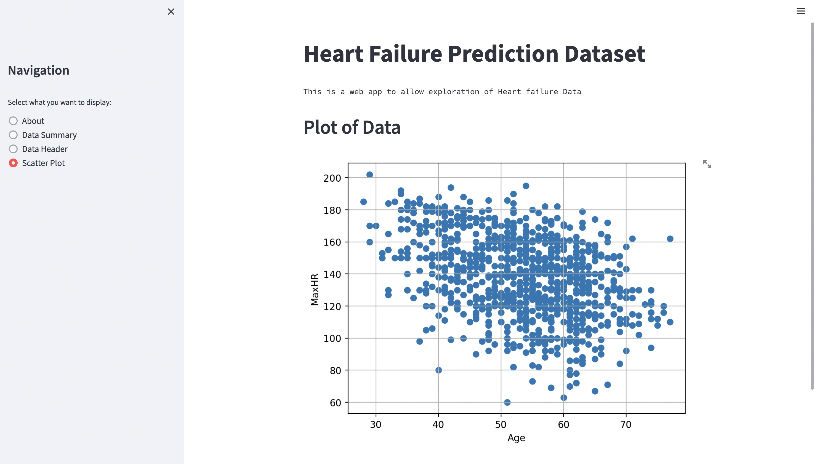
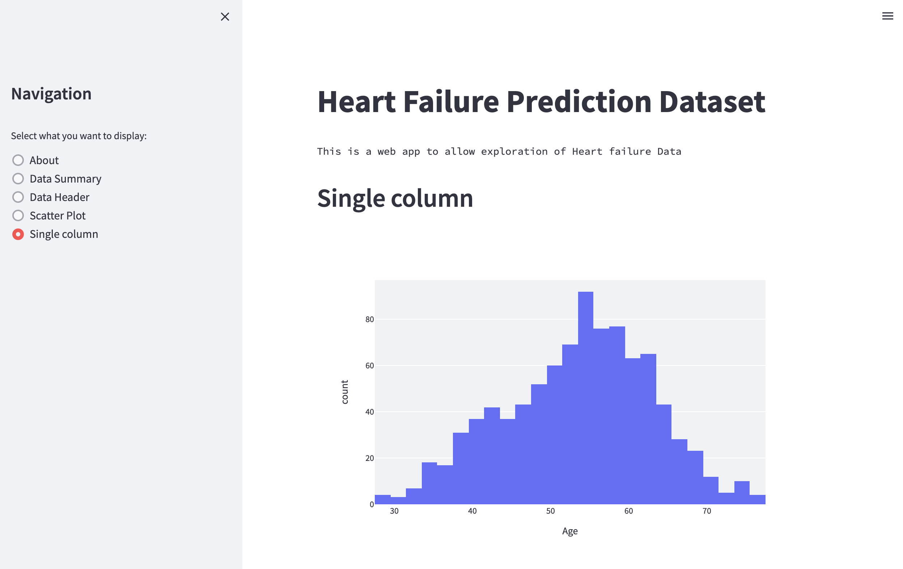
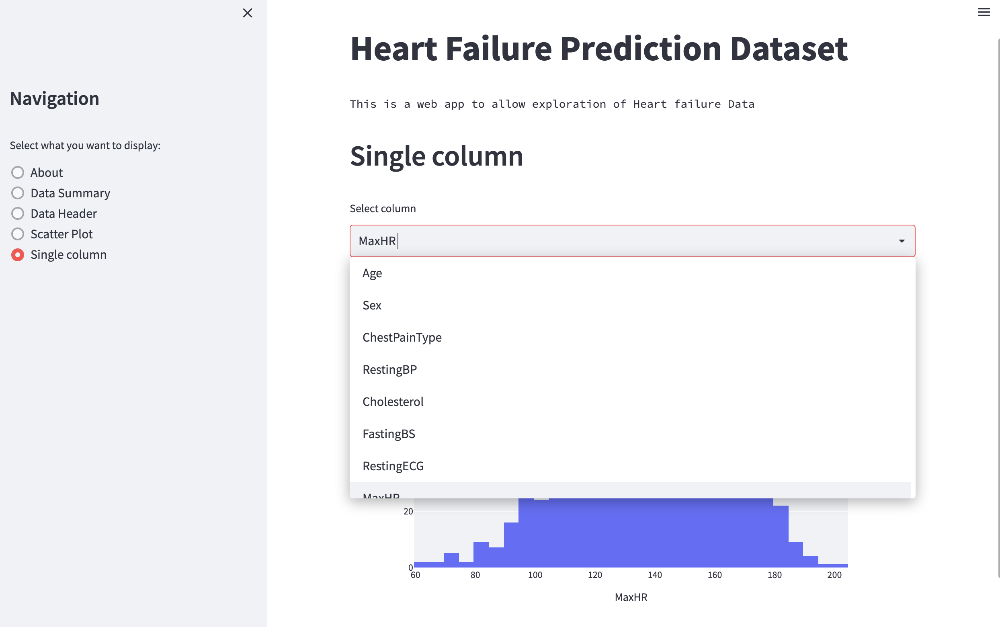
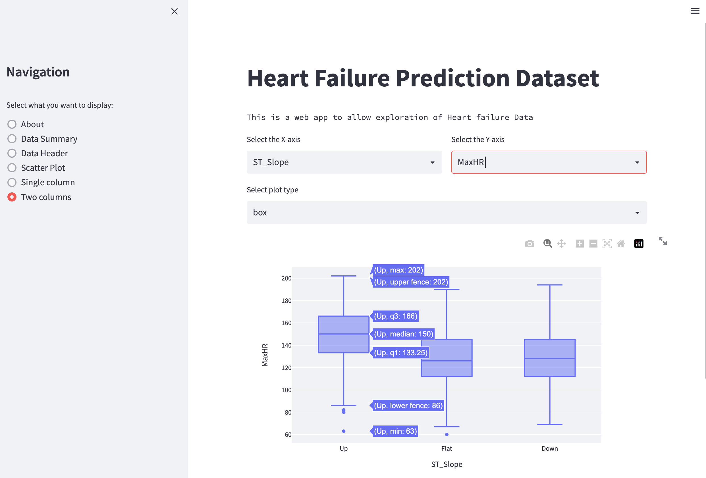

Building a data visualization app with streamlit
Contents
Building a data visualization app with streamlit#
When working with data, having a way to interactively explore your dataset is often essential in order to understand and interpret the data. Futhermore, interactive visualizations is a great way to communicate with non-technical people about the main findings.
Jupyter notebooks#
Jupyter notebooks is great tool to explore the data, and with the help of for example widgets you can also make pretty nice interactive visualizations with jupyter notebooks. That said, jupyter notebooks still require some level of programming. Futhermore, the code you need to write in order to make visualizations in a jupyter notebook will til be visible within the notebook. These code block might contain a lot of details that might disturb the people that need to make decisions about the data and therefore it would be advantageous to present the data in a format that is both interactive and that hides details about the implementation.
Tools for building interactive data visualizations#
Several tools have been made for creating interactive data visualizations. One example is Dash which is built on top of the plotting library called Plotly. Another popular choice is Voilà which basically takes a jupyter notebook and turns it into a web application.
We will take a closer look at library called streamlit
Streamlit#
Before we can use streamlit we need to install it. This can be done using pip, i.e
python -m pip install streamlit
For more info about installing streamlit please consult the installation instructions.
Once installed you should have access to a command line script called streamlit. Running
$ streamlit --version
should display the version of streamlit. The one used at the time of writing is version 1.13.0.
You can also display a help menu by running streamlit with the --help flag.
$ streamlit --help
Usage: streamlit [OPTIONS] COMMAND [ARGS]...
Try out a demo with:
$ streamlit hello
Or use the line below to run your own script:
$ streamlit run your_script.py
Options:
--log_level [error|warning|info|debug]
--version Show the version and exit.
--help Show this message and exit.
Commands:
activate Activate Streamlit by entering your email.
cache Manage the Streamlit cache.
config Manage Streamlit's config settings.
docs Show help in browser.
hello Runs the Hello World script.
help Print this help message.
run Run a Python script, piping stderr to Streamlit.
version Print Streamlit's version number.
You can try out the built-in demo using
$ streamlit hello
Welcome to Streamlit. Check out our demo in your browser.
Local URL: http://localhost:8501
Network URL: http://192.168.0.98:8501
Ready to create your own Python apps super quickly?
Head over to https://docs.streamlit.io
May you create awesome apps!
We see that streamlit will start a web-server running on port 8501. In other words, if you open a web browser (e.g Google Chrome or FireFox), and go to the url http://localhost:8501.
It should look similar to the figure below
{kind=link}

Fig. 44 Streamlit hello app#
A web app to explore Heart failure Data#
We will use a real dataset with heart failure data and create a web application to explore this dataset using streamlit. The dataset is taken from Kaggle which contains a large collection of open source datasets which are used in competitions to create Machine learning models. The nice thing about this dataset is that many people have already submitted their analysis of this dataset which you can take a look at if you want to learn how to analyze such datasets.
We can download this dataset and read it with pandas (to download it you need to first create an account at Kaggle) and print some info about this dataset.
import pandas as pd
df = pd.read_csv("heart.csv")
df.info()
<class 'pandas.core.frame.DataFrame'>
RangeIndex: 918 entries, 0 to 917
Data columns (total 12 columns):
# Column Non-Null Count Dtype
--- ------ -------------- -----
0 Age 918 non-null int64
1 Sex 918 non-null object
2 ChestPainType 918 non-null object
3 RestingBP 918 non-null int64
4 Cholesterol 918 non-null int64
5 FastingBS 918 non-null int64
6 RestingECG 918 non-null object
7 MaxHR 918 non-null int64
8 ExerciseAngina 918 non-null object
9 Oldpeak 918 non-null float64
10 ST_Slope 918 non-null object
11 HeartDisease 918 non-null int64
dtypes: float64(1), int64(6), object(5)
memory usage: 86.2+ KB
We can also use the .describe method to display some simple statistics about the dataset
df.describe()
| Age | RestingBP | Cholesterol | FastingBS | MaxHR | Oldpeak | HeartDisease | |
|---|---|---|---|---|---|---|---|
| count | 918.000000 | 918.000000 | 918.000000 | 918.000000 | 918.000000 | 918.000000 | 918.000000 |
| mean | 53.510893 | 132.396514 | 198.799564 | 0.233115 | 136.809368 | 0.887364 | 0.553377 |
| std | 9.432617 | 18.514154 | 109.384145 | 0.423046 | 25.460334 | 1.066570 | 0.497414 |
| min | 28.000000 | 0.000000 | 0.000000 | 0.000000 | 60.000000 | -2.600000 | 0.000000 |
| 25% | 47.000000 | 120.000000 | 173.250000 | 0.000000 | 120.000000 | 0.000000 | 0.000000 |
| 50% | 54.000000 | 130.000000 | 223.000000 | 0.000000 | 138.000000 | 0.600000 | 1.000000 |
| 75% | 60.000000 | 140.000000 | 267.000000 | 0.000000 | 156.000000 | 1.500000 | 1.000000 |
| max | 77.000000 | 200.000000 | 603.000000 | 1.000000 | 202.000000 | 6.200000 | 1.000000 |
Creating the first page with streamlit#
Let us start by creating a very simple application with streamlit. Create a file called app.py with the following content
import streamlit as st
st.title("Heart Failure Prediction Dataset")
st.text("This is a web app to allow exploration of Heart failure Data")
Try to the python file using the following command
streamlit run app.py
A browser should open automatically (if not you can open a browser and go to the url http://localhost:8502). Try to change the text in the python file, refresh the browser and see that the changes take affect.
Let us try to add some more content to the application, by adding the following lines that describe the dataset that we will explore.
st.header("Dataset")
st.markdown(
"""
This dataset is taken from
https://www.kaggle.com/datasets/fedesoriano/heart-failure-prediction
At Kaggle, several authors publish their own code where they
have analyzed the different datasets.
For example, the following review https://www.kaggle.com/code/durgancegaur/a-guide-to-any-classification-problem/notebook
is a pretty good one.
"""
)
Loading the data#
We now want to load the data into the application. We can do this by reading the .csv file into a pandas.DataFrame and let us also write the statistics to to the application by adding the following lines
import pandas as pd
df = pd.read_csv("heart.csv")
st.header("Statistics of Dataframe")
st.write(df.describe())
Your app should now look similar to the following figure
{kind=link}

Fig. 45 Current version of the web application#
Creating different pages#
Now we would like to have different pages appearing when clicking on the different radio buttons. We can do this by having an if test at the end of the script and run a different function based on the value of options. For example
if options == "About":
show_about_page()
elif options == "Data Summary":
show_data_summary_page()
elif options == "Data Header":
show_data_header_page()
and then we can wrap the about page and data summary into separate functions. Here we have also added a page to show the head of the dataframe
The full code currently looks as follows
import streamlit as st
import pandas as pd
st.title("Heart Failure Prediction Dataset")
st.text("This is a web app to allow exploration of Heart failure Data")
def show_about_page():
st.header("Dataset")
st.markdown(
"""
This dataset is taken from
https://www.kaggle.com/datasets/fedesoriano/heart-failure-prediction
At Kaggle, several authors publish their own code where they
have analyzed the different datasets.
For example, the following review https://www.kaggle.com/code/durgancegaur/a-guide-to-any-classification-problem/notebook
is a pretty good one.
"""
)
df = pd.read_csv("heart.csv")
def show_data_summary_page():
st.header("Statistics of Dataframe")
st.write(df.describe())
def show_data_header_page():
st.header("Header of Dataframe")
st.write(df.head())
st.sidebar.title("Navigation")
options = st.sidebar.radio(
"Select what you want to display:",
[
"About",
"Data Summary",
"Data Header",
],
)
if options == "About":
show_about_page()
elif options == "Data Summary":
show_data_summary_page()
elif options == "Data Header":
show_data_header_page()
You should now be able to change the page using the radio buttons.
{kind=link}

Fig. 46 Current version of the web application with sidebar and three pages#
Plotting with matplotlib#
Being able to plot the data will give another way of exploring the data. Most people are most familiar with matplotlib so we will start with creating som simple visualizations of the data using that. Later we will look at another visualization library called plotly which are better suited for creating interactive visualizations.
In order to use matplotlib we would need to first import it
import matplotlib.pyplot as plt
To make things simple, let us assume that we want to plot maximum heart rate as a function of age. We can create such as plot using the following code snippet
fig, ax = plt.subplots()
ax.scatter(x=df["Age"], y=df["MaxHR"])
ax.grid()
ax.set_xlabel("Age")
ax.set_ylabel("MaxHR")
In order to display this in the web application we need to pass the matplotlib figure into a streamlit. We do this using the pyplot method in streamlit.
We can wrap this code into a new function called plot_mpl
def plot_mpl():
st.header("Plot of Data")
fig, ax = plt.subplots()
ax.scatter(x=df["Age"], y=df["MaxHR"])
ax.grid()
ax.set_xlabel("Age")
ax.set_ylabel("MaxHR")
st.pyplot(fig)
and we can create a new page called "Scatter Plot" that we can select in the sidebar
options = st.sidebar.radio(
"Select what you want to display:",
[
"About",
"Data Summary",
"Data Header",
"Scatter Plot",
],
)
if options == "About":
about()
elif options == "Data Summary":
data_summary(df)
elif options == "Data Header":
data_header(df)
elif options == "Scatter Plot":
plot_mpl(df)
{kind=link}

Fig. 47 Plotting with matplotlib#
Plotting with plotly express#
matplotlib is great for plotting, and especially useful for creating figures for reports. However, there are other libraries that are better suited for interactive visualizations. One of these libraries are plotly which is built on top of a javascript library called plotly.js. Here we will use a subpackage of plotly called plotly.express which is a simplified version of the plotly library.
To use plotly.express we need to first import it, and it is common to import it as px
import plotly.express as px
Before we start plotting anything, let us create a new page in our web application. In this example we would like to plot the distribution of a single column as a histogram. This can be useful order to e.g see what are the ages of the people included in this study.
Let us create a new method called single_column where we can start with simple writing some text, e.g
def single_column():
st.header("Single column")
and then we add a new option to the sidebar
options = st.sidebar.radio(
"Select what you want to display:",
[
"About",
"Data Summary",
"Data Header",
"Scatter Plot",
"Single column",
],
)
and finally an if-test to call this method in
if options == "About":
show_about_page()
elif options == "Data Summary":
show_data_summary_page()
elif options == "Data Header":
show_data_header_page()
elif options == "Scatter Plot":
plot_mpl()
elif options == "Single column":
single_column()
You should now see a new radio button in the sidebar saying Single column and when clicked will show the text Single column.
Creating a histogram#
We can create a histogram over all the ages by passing in the dataframe and the key "Age" to the histogram function in plotly.express as follows
plot = px.histogram(df, x="Age")
To add this plot to streamlit we can use the plotly_chart function
st.plotly_chart(plot)
After adding these to lines of code to the function single_column, you should see a histogram over all the ages in the dataset
{kind=link}

Fig. 48 Plotting histogram of all the ages using plotly express.#
Adding selectbox to select different columns#
Currently, we have hardcoded in the key "Age" as the column to be used in the histogram. However, this is not very robust and not very flexible. In stead we would like the user to be able to select any of the columns in the dataset.
One way to do this is to create a selectbox in streamlit and set the options to the columns in the DataFrame
column = st.selectbox("Select column", options=df.columns)
now instead of passing the the column "Age" we can pass in the column we selected using the selectbox
plot = px.histogram(df, x=column, use_container_width=True)
Here we have also set use_container_width=True so that the figure scales properly width the width of the application.
You should now be able to select a column, and the plot should update accordingly
{kind=link}

Fig. 49 Plotting histogram with selectbox using plotly express.#
Plotting two columns#
Plotting a histogram of one column is useful, but it is also useful to plot one column against another (such as the scatter plot with plotted with matplotlib). Now that we have learned how to create a select box, it should be no problem to create two select boxes in order to select the data to be plotted on the X- and Y-axis.
Let us create a now radio button with the label Two columns and a corresponding function two_columns with the following content
def two_columns():
col1, col2 = st.columns(2)
x_axis_val = col1.selectbox("Select the X-axis", options=df.columns)
y_axis_val = col2.selectbox("Select the Y-axis", options=df.columns)
plot_type = st.selectbox("Select plot type", options=["scatter", "box"])
if plot_type == "scatter":
plot = px.scatter(df, x=x_axis_val, y=y_axis_val)
elif plot_type == "box":
plot = px.box(df, x=x_axis_val, y=y_axis_val)
st.plotly_chart(plot, use_container_width=True)
Here we first create two select boxes for the columns to be plotted on the X- and Y-axis. Then we create another selectbox where the user can select the type of plot the user wants to display (i.e either a scatter plot or a box plot), and finally we plot the data and add the plot to streamlit.
{kind=link}

Fig. 50 Plotting two columns with plotly express#
Final code#
Below you will see the final code of the whole web application. Here we also updated the functions to take the dataframe as an argument which makes it more explicit what data is used.
# app.py
import streamlit as st
import pandas as pd
import matplotlib.pyplot as plt
import plotly.express as px
st.set_page_config(layout="wide")
def about():
st.header("Dataset")
st.markdown(
"""
This dataset is taken from
https://www.kaggle.com/datasets/fedesoriano/heart-failure-prediction
At Kaggle, several authors publish their own code where they
have analyzed the different datasets.
For example, the following review https://www.kaggle.com/code/durgancegaur/a-guide-to-any-classification-problem/notebook
is a pretty good one.
"""
)
def data_summary(df):
st.header("Statistics of Dataframe")
st.write(df.describe())
def data_header(df):
st.header("Header of Dataframe")
st.write(df.head())
def plot_mpl(df):
st.header("Plot of Data")
fig, ax = plt.subplots()
ax.scatter(x=df["Age"], y=df["MaxHR"])
ax.grid()
ax.set_xlabel("Age")
ax.set_ylabel("MaxHR")
st.pyplot(fig)
def single_column(df):
column = st.selectbox("Select column", options=df.columns)
plot = px.histogram(df, x=column)
st.plotly_chart(plot, use_container_width=True)
def two_columns(df):
col1, col2 = st.columns(2)
x_axis_val = col1.selectbox("Select the X-axis", options=df.columns)
y_axis_val = col2.selectbox("Select the Y-axis", options=df.columns)
plot_type = st.selectbox("Select plot type", options=["scatter", "box"])
if plot_type == "scatter":
plot = px.scatter(df, x=x_axis_val, y=y_axis_val)
elif plot_type == "box":
plot = px.box(df, x=x_axis_val, y=y_axis_val)
st.plotly_chart(plot, use_container_width=True)
# Add a title and intro text
st.title("Heart Failure Prediction Dataset")
st.text("This is a web app to allow exploration of Heart failure Data")
# Sidebar setup
# st.sidebar.title("Sidebar")
# upload_file = st.sidebar.file_uploader("Upload a file containing earthquake data")
# Sidebar navigation
st.sidebar.title("Navigation")
options = st.sidebar.radio(
"Select what you want to display:",
[
"About",
"Data Summary",
"Data Header",
"Scatter Plot",
"Single column",
"Two columns",
],
)
# Check if file has been uploaded
df = pd.read_csv("heart.csv")
# Navigation options
if options == "About":
about()
elif options == "Data Summary":
data_summary(df)
elif options == "Data Header":
data_header(df)
elif options == "Scatter Plot":
plot_mpl(df)
elif options == "Single column":
single_column(df)
elif options == "Two columns":
two_columns(df)